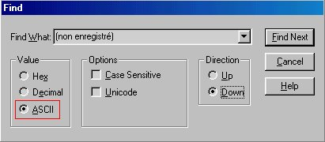
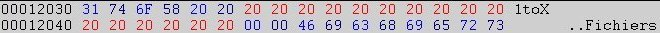
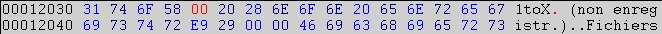
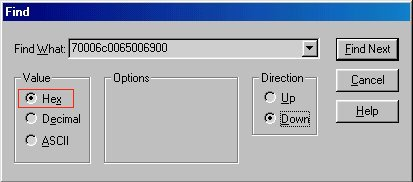
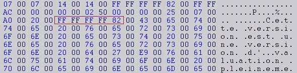
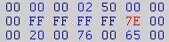
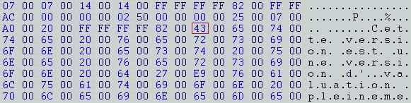

[interlude de
Smeita...]
Attention les amis !!
J'avais deja essayé d'expliquer comment virer un nagscreen dans
un editeur hexadecimal mais c'etait un peu flou, bourrin et
moyennement efficace... Heureusement, Static REvenge est la pour
amener sa touche de professionalisme a cette technique etonnante
;) Bon, en tous cas, si vous avez un peu de mal avec votre
editeur hexa, je vous invite a relire le [MemenTo 1 - cour IV
- 'Comment faire sauter un nag ?']...
[...Fin
d'interlude...]
Dans ce cours, nous allons voir un exemple extrèmement simple sur "comment cracker un prog rien qu' avec un editeur héxa" :)
Pour
cela, vous aurez bien sur besoin de votre editeur héxa préfére
et du prog 1toX (180Ko) téléchargable ici. (note : il faudra
renommer le fichier 'tox.fic' en 'tox.zip'...)
Donc voilà, une fois 1ToX installer,il faut le démarrer (beu...ca peut servir) puis que voit-on, un '(non enregistré)'du plus mauvais effet... Ensuite, après avoir bien fait tourner le prog, vous verez qu'il est bien pratique et puissant, mais dès que vous le quittez un nag très embêtant apparait. alors là c' est trop, il va faloir virer tout ca...
Pour cela, rappellez-vous, un '(non enregistré)'est présent dans la barre de présentation. En premier lieu, nous allons nous occuper de lui. Alors voilà, avant tout faites une sauveguarde du fichier 1toX.exe, puis ouvrez-le avec votre éditeur héxa. Bon, ok, ca parait bordélique, mais vous allez voir, c' est très simple.
NB: pour pouvoir ecrire sur le fichier, il faut avoir quitter le prog.
Avant de commencer, une p'tite intro-vite-fait sur l' héxadécimal s'impose:
Heu...Bé
en décimale on compte jusqu' à 15 comme ca =>
0,1,2,3,4,5,6,7,8,9,10,11,12,13,14,15
Et en héxa, on compte aussi jusqu'a 15, mais comme ca =>
0,1,2,3,4,5,6,7,8,9,a,b,c,d,e,f.
Attention, on part sur une base de 0, ce qui fait un total de 16 adresses sur une ligne 32-bits, celles que vous verez avec n' importe quel éditeur héxadécimal :) (ndSmeita: Si vous comprenez pas, c'est pas important...)
Bon,
une fois que tout est prêt, lancez une recherche en mode ASCII
sur (non
enregistré).Pour
ce faire, recherchez le de cette façon (ca donne ca en general
sous un editeur hexa...).
(ndSmeita: Dans certains editeurs (HEdit par exemple),
l'equivalent est une recherche en 'Text'...).

Là, vous allez forcément tomber dessus et deux solutions s' offrent à vous pour l' éffacer:
- Celle du cracker bourrin (méthode moyenne) qui va remplacer tout ca en appuyent sur [Espace] (ndSmeita: un [espace] correspond au code ASCII '20'). Cela donne:

- Et celle du cracker qui y va tranquille et qui va faire ca bien proprement en placent un octects bien precis, ici 00. Cela donne:

Si l'on dois mettre un 00, c' est parce qu' une fonction du programme va dire de lire le '(non enregistré)' d' une adresse à une autre, ici de ( ... à ... ) -->les parenthèses de mot 'non enrigistré. Et c' est avec un simple 00 que l' on va faire comprendre au PC que le texte s' arrete juste après le X de 1toX. Et comme 00 n' est pas une instruction, il indique juste une zone dite vide qui ne sert à rien et que la machine va interpretter comme un stop sur le texte si l' on peut dire ainsi.
Pour ce qui suit, laissez tomber 2 minutes WinDasm et les autres désassembleurs...
Alors, pour virer un nag, il faut d' abord lire ce qu' il comporte et y chercher un mot qui y est utiliser asser peux pour reperrer plus vite le coin interessant. Sur ce nag, on peut voir ca:
'Cette
version est une version d' évaluation pleinement fonctionnelle.
Vous pouvez tester 1toX pendant une duré de 30 jours.'
Bon, prenez par exemple le mot 'pleinement' et lancez une recherche mais ce coup-ci en mode héxadécimal. Bé ca alors! On peut pas entrer ce mot dans la cellule de recherche! Normal, car rappellez vous, on compte en héxa. Il faut donc trouver ce mot en mode héxa. Pour ce faire, recherchez le de cette façon (ca donne ca en general sous un editeur hexa):

Soit "pleinement" donne en héxa: 70 00 6C 00 65 00 69 00 6E 00 65 00 6D 00 65 00 6E 00 74
NB: Inutile de tout entrer.
Et là, nous avons
de la "chance", car ce mot n'est present qu' une fois
dans le prog.
On peut à cet endroit reconnaitre sans problème l' ensemble du
message :)
Alors bien sur, comme un prog se lit et va être executer par le machine de haut-en-bas il faut remonter pour voir qu' est ce qui va faire que ce message va s' afficher. Nous pouvons voir qu'une certaine chaîne d'octects est presente de très près juste au dessus, la voici:

Alors pkoi cette chaîne? En fait, ca ne fonctionne pas tout le temps si l' on prend toujours la chaîne la plus proche du texte du nag. Parfois un telle chaîne peut se trouver bien plus haut avec des messages qui ne correspondent pas au nag, mais c' est assé rare. Il est vrai qu' il n' y à pas mal de chaînes de ce type dans ce prog mais c' est celle-ci qui va determinée si le nag va s' affiché ou non. Ici c' est grâce (et dans la plupart des cas) au 82.
Dans ce cas, il faut remplacer 82 par 7E.

Que veux dire 7E? Et bien cela vient du compilateur C++. Cette modif' n' a aucune signification en assembleur. De plus, il est très difficle de trouver une telle chaîne avec un désassembleur. Cette modification va donc virer le nag automatiquement. Le 7E (comme un 7C) montre d' après plusieurs experiences qu' il peut servir à aussi bien à virer entièrement des fenêtres que des boutons de commande ;))
Vala,
ce prog n'à été cracké rien qu' avec un editeur héxa.
Cette méthode est valables pour pas mal de progs :)
Ici, je prends en compte le fait que vous ayez deja lu la premiere méthode.
Je vous ai montrer la méthode precèdente en premier parce qu'elle fonctionne plus souvent que celle qui suit.
Alors voila, là nous allons toujours utilisé un éditeur héxa. Pour virer le '(non enregistré)', c' est la même chose qu' au debut du cours dans la rubrique Virer le (non enregistré). Pour le nag, c' est presque la même chose.
Alors pour le virer, lancez un recherche sur en mode héxadecimal sur " 70 00 6C 00 65 00 69 00 6E 00 65 00 6D 00 65 00 6E 00 74 " qui correspond comme nous avons pus le voir au mot "pleinement".
Une
fois arrivé à cet endroit, juste un octect va nous interresser.
D'ailleur, il se trouve juste après la fameuse chaîne de la
preimière méthode:

Alors pkoi cet octet? Car il correspond à la lettre "C" de la phrase "Cette version est une version d' évaluation..." (ndSmeita: pour ceux qu'on pas pas compris, c'est la premiere lettre de la phrase...)
Souvenez vous, pour virer le (non enregistré), nous avions mis un 00 au début de la phrase, et bien là c' est la même chose, il faut remplacer le 43 par 00 :))
Et oui, car le prog va croire qu' aucun texte n' est présent dans cette fenêtre alors il ne va pas l' affichée du tout, c' est t'y pas cool?
Cette méthode fonctionne bien sur les progs programmés et compilés de façon simple sans reverse-enginnering itout. (ndSmeita : enfin bref, ca fonctionne plutot bien :)).